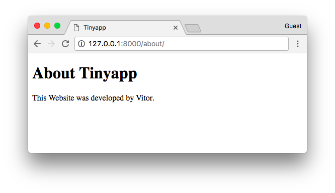

In this article I want to explore some of the basic concepts of Django, setting up a minimal web application to get a deeper understanding of how Django works under the hoods.
An important disclaimer before we start, that’s not a tutorial about how to start a Django application, it’s more of an exploratory experiment for learning purpose.
Introduction
If you are reading this article, the chances are that you already know that Django is a Web framework written in Python. But that’s an abstract definition. In practice, Django is a Python package that lives inside the site-packages directory of your current Python installation. That means it lives alongside with other Python packages, such as Requests, Pillow and NumPy.
A simple way to verify a Django installation is importing it in a Python shell:
>>> import django
>>> print(django.get_version())
1.11.4But the way we interact with Django is a little bit different than the way we interact with other Python packages. Usually we don’t import it directly into our Python programs to make use of its resources.
When we first start learning Django, we are taught that we should start a new project using the django-admin
command-line utility by executing the startproject command.
The startproject command creates a basic Django project directory structure with the following files:
- manage.py
- settings.py
- urls.py
- wsgi.py
The contents of the files above are essentially a boilerplate code that’s generated using the templates inside the django.conf.project_template folder. It’s like a pre-configuration of commonly used resources.
For example, if you are going to develop a Web application, the chances are that you will need a database, handle user
authentication, work with sessions, and so on. The boilerplate code from the startproject command makes our life
easier. But that’s not the only way to start a new project. We could start everything from scratch. And that’s sort of
what we are going to do in this article.
Also, the names are purely convention, which is a good thing because whenever you browse an existing Django project it’s easier to know where to find certain things.
In the next sections we are going to explore the role of each of those files in a Django project.
Running a Project Locally
To run the the development server, we usually execute the following command:
python manage.py runserverThe manage.py script is automatically generated when we start a new Django project by running the command:
django-admin startproject myprojectBasically the django-admin and manage.py does the same things. The main difference is that manage.py adds your
project’s package in the sys.path and sets the environment variable DJANGO_SETTINGS_MODULE to point to your
settings.py file.
That means we could run the development server of my project using the django-admin command-line utility. The
difference is that we would need to provide manually the information of the path to my project’s package and the
settings.py.
So, considering my project is in the following path: /home/projects/myproject, we can start the development server like this:
django-admin runserver --pythonpath='/home/projects/myproject' --settings=myproject.settingsOr if you are currently in the project root in the file system, you could perhaps do this to save typing:
django-admin runserver --pythonpath=. --settings=myproject.settingsAs you can see, the settings.py module is the starting point of every Django project. It’s the file responsible
for putting the pieces together and instructing Django on how to run our project; which apps are installed, what
database the project uses (if any), the credentials to connect, where to find the project’s templates, the urls,
the wsgi module and many other important configurations.
The name settings.py is just a convention. We could use any other name. As far as we tell Django where to find the
required information.
The Settings Module
Now that we know the settings module is the central part to run our project, what’s the bare minimum configuration we need to feed Django, so to start the development server?
Before we answer that question, know that Django comes pre-configured. Before loading your project’s settings module, Django will load the global settings that can be found in the django.conf.global_settings.py file.
The link above takes you to the file directly in the Django’s GitHub repository. Take a moment and check it out.
What happen when Django finally loads your project’s settings module, is that it will override the default values from the global_settings.py.
The global_settings.py doesn’t have all the necessary information. We will need to provide at least a
SECRET_KEY.
If you check the Django’s global_settings.py file, you will see right at the top of the file that the DEBUG
configuration defaults to False. If you don’t override it to True, you will also need to configure the
ALLOWED_HOSTS variable.
So, the bare minimum configuration just to successfully start the development server could be either defining the
SECRET_KEY and DEBUG=True, or SECRET_KEY and ALLOWED_HOSTS.
Starting a Project From Scratch
To try things out, I created a file named tinyapp.py and added the following parameters to it:
DEBUG = True
SECRET_KEY = '4l0ngs3cr3tstr1ngw3lln0ts0l0ngw41tn0w1tsl0ng3n0ugh'Let’s run it:
django-admin runserver --pythonpath=. --settings=tinyappIt’s running. Let’s see what happens when we open it in a web browser:
At least something showed up. Let’s check the terminal for some further information about the error we got. Checking the terminal that I’m using to run the project, it says:
AttributeError: 'Settings' object has no attribute 'ROOT_URLCONF'At the moment we happen to have no URL or view. Actually right now Django doesn’t even know where to look for URL patterns to see if it have something to process or show.
The ROOT_URLCONF expects the path to a special file that contains a list of URLs so it can match the requested path
with the views within our project. This file needs to define a list named urlpatterns. That’s correct! We are talking
about our well known urls.py module here.
But, so far we don’t need a urls.py file. We can tell Django to import the urlpatterns from our tinyapp.py
file, so it can also be our ROOT_URLCONF.
DEBUG = True
SECRET_KEY = '4l0ngs3cr3tstr1ngw3lln0ts0l0ngw41tn0w1tsl0ng3n0ugh'
ROOT_URLCONF = __name__
urlpatterns = []There we go! Our first Django-powered page!
Working With Views
So far so good. But our tiny Django app isn’t doing much. Let’s add our very first view.
A Django view is just a Python function that receives an HttpRequest object and returns an HttpResponse.
Truth is, our view functions can be defined anywhere in our project. Django won’t look for a file named views.py.
Again, it’s just a convention. Unless you have a good reason for doing it in a different way, stick with the
convention.
We will get there later. For now, let’s keep writing code inside the tinyapp.py file.
Below, our first Django view named home. It simply returns a text saying “Welcome to the Tinyapp’s Homepage!”.
from django.http import HttpResponse
DEBUG = True
SECRET_KEY = '4l0ngs3cr3tstr1ngw3lln0ts0l0ngw41tn0w1tsl0ng3n0ugh'
ROOT_URLCONF = __name__
def home(request):
return HttpResponse('Welcome to the Tinyapp\'s Homepage!')
urlpatterns = []The next step is instructing Django when to return this view to the visitor. We can do that by adding an entry to the
urlpatterns list.
The urlpatterns list expects instances of url() which can be imported from django.conf.urls.
To define a url() you need to at least inform a regex compatible with Python’s re module and a view function or the
result of as_view() for class-based views.
A basic url routing to the homepage looks like this:
from django.conf.urls import url
from django.http import HttpResponse
DEBUG = True
SECRET_KEY = '4l0ngs3cr3tstr1ngw3lln0ts0l0ngw41tn0w1tsl0ng3n0ugh'
ROOT_URLCONF = __name__
def home(request):
return HttpResponse('Welcome to the Tinyapp\'s Homepage!')
urlpatterns = [
url(r'^$', home),
]The result is:

HTML Templates
Even though we are just returning a string in our first view, the browser tries to render it as if it was an HTML page.
If you want to return text only, you can pass this information along in the HttpResponse so the browser will know it’s
working with plain text only and won’t try to do anything smart with the response body:
from django.conf.urls import url
from django.http import HttpResponse
DEBUG = True
SECRET_KEY = '4l0ngs3cr3tstr1ngw3lln0ts0l0ngw41tn0w1tsl0ng3n0ugh'
ROOT_URLCONF = __name__
def home(request):
return HttpResponse('Welcome to the Tinyapp\'s Homepage!', content_type='text/plain')
urlpatterns = [
url(r'^$', home),
]You can see that the browser renders it a little bit different, as it won’t try to parse the content as HTML:
But we know that’s not the case in most of the cases while developing Web applications. Let’s remove the content_type
and add some HTML to our pages.
from django.conf.urls import url
from django.http import HttpResponse
DEBUG = True
SECRET_KEY = '4l0ngs3cr3tstr1ngw3lln0ts0l0ngw41tn0w1tsl0ng3n0ugh'
ROOT_URLCONF = __name__
def home(request):
return HttpResponse('<h1 style="color:red">Welcome to the Tinyapp\'s Homepage!</h1>')
urlpatterns = [
url(r'^$', home),
]We can keep it on and make it a little bit more dynamic:
from django.conf.urls import url
from django.http import HttpResponse
DEBUG = True
SECRET_KEY = '4l0ngs3cr3tstr1ngw3lln0ts0l0ngw41tn0w1tsl0ng3n0ugh'
ROOT_URLCONF = __name__
def home(request):
color = request.GET.get('color', '')
return HttpResponse(
'<h1 style="color:' + color + '">Welcome to the Tinyapp\'s Homepage!</h1>'
) # don't use user input like that in real projects!
urlpatterns = [
url(r'^$', home),
]We could keep playing with strings and generating HTML on-the-fly:
from django.conf.urls import url
from django.http import HttpResponse
DEBUG = True
SECRET_KEY = '4l0ngs3cr3tstr1ngw3lln0ts0l0ngw41tn0w1tsl0ng3n0ugh'
ROOT_URLCONF = __name__
def home(request):
color = request.GET.get('color', '')
return HttpResponse('<h1 style="color:' + color + '">Welcome to the Tinyapp\'s Homepage!</h1>')
def about(request):
title = 'Tinyapp'
author = 'Vitor Freitas'
html = '''<!DOCTYPE html>
<html>
<head>
<title>''' + title + '''</title>
</head>
<body>
<h1>About ''' + title + '''</h1>
<p>This Website was developed by ''' + author + '''.</p>
</body>
</html>'''
return HttpResponse(html)
urlpatterns = [
url(r'^$', home),
url(r'^about/$', about),
]
But hey, there should be a better way to do it. And sure thing there is. That’s what the Django’s Template Engine is all about.
Before we can use it, we need to tell Django our project makes use of the template engine:
from django.conf.urls import url
from django.http import HttpResponse
DEBUG = True
SECRET_KEY = '4l0ngs3cr3tstr1ngw3lln0ts0l0ngw41tn0w1tsl0ng3n0ugh'
ROOT_URLCONF = __name__
TEMPLATES = [{'BACKEND': 'django.template.backends.django.DjangoTemplates'},]
def home(request):
# body of the function...
def about(request):
# body of the function...
urlpatterns = [
url(r'^$', home),
url(r'^about/$', about),
]The Django Template Engine have its own syntax rules. Basically it will read a file (a template), usually a .html
file, parse it, process all the special tags like {{ var }} or {% for user in users %} and the final result will
be an output string, which normally is a valid HTML document which is returned to the user.
See the example below:
from django.conf.urls import url
from django.http import HttpResponse
DEBUG = True
SECRET_KEY = '4l0ngs3cr3tstr1ngw3lln0ts0l0ngw41tn0w1tsl0ng3n0ugh'
ROOT_URLCONF = __name__
TEMPLATES = [{'BACKEND': 'django.template.backends.django.DjangoTemplates'},]
def home(request):
color = request.GET.get('color', '')
return HttpResponse('<h1 style="color:' + color + '">Welcome to the Tinyapp\'s Homepage!</h1>')
from django.template import engines
from django.template.loader import render_to_string
def about(request):
title = 'Tinyapp'
author = 'Vitor Freitas'
about_template = '''<!DOCTYPE html>
<html>
<head>
<title>{{ title }}</title>
</head>
<body>
<h1>About {{ title }}</h1>
<p>This Website was developed by {{ author }}.</p>
<p>Now using the Django's Template Engine.</p>
<p><a href="{% url 'homepage' %}">Return to the homepage</a>.</p>
</body>
</html>
'''
django_engine = engines['django']
template = django_engine.from_string(about_template)
html = template.render({'title': title, 'author': author})
return HttpResponse(html)
urlpatterns = [
url(r'^$', home, name='homepage'),
url(r'^about/$', about, name='aboutpage'),
]
Here we are using the Django’s Template Engine programmatically. But what we normally do is storing the HTML templates outside the Python code and telling Django where to look for the templates.
Let’s do it step-by-step.
First, create a folder named “templates” alongside our tinyapp.py file.
Now, save the content of the about_template variable inside an HTML file named about.html, inside our recently
created templates folder.
templates/about.html
<!DOCTYPE html>
<html>
<head>
<title>{{ title }}</title>
</head>
<body>
<h1>About {{ title }}</h1>
<p>This Website was developed by {{ author }}.</p>
<p>Now using the Django's Template Engine.</p>
<p><a href="{% url 'homepage' %}">Return to the homepage</a>.</p>
</body>
</html>That’s what our project looks like now:
myproject/
|-- templates/
| +-- about.html
+-- tinyapp.pySo, now instead of loading the template from a Python string, we can load it from the filesystem.
First and most importantly, we tell Django where to find the templates:
TEMPLATES = [
{
'BACKEND': 'django.template.backends.django.DjangoTemplates',
'DIRS': [
'/home/projects/myproject/templates/'
],
},
]Now we can refactor our about view:
from django.conf.urls import url
from django.http import HttpResponse
from django.template.loader import render_to_string
DEBUG = True
SECRET_KEY = '4l0ngs3cr3tstr1ngw3lln0ts0l0ngw41tn0w1tsl0ng3n0ugh'
ROOT_URLCONF = __name__
TEMPLATES = [
{
'BACKEND': 'django.template.backends.django.DjangoTemplates',
'DIRS': [
'/home/projects/myproject/templates/'
],
},
]
def home(request):
color = request.GET.get('color', '')
return HttpResponse('<h1 style="color:' + color + '">Welcome to the Tinyapp\'s Homepage!</h1>')
def about(request):
title = 'Tinyapp'
author = 'Vitor Freitas'
html = render_to_string('about.html', {'title': title, 'author': author})
return HttpResponse(html)
urlpatterns = [
url(r'^$', home, name='homepage'),
url(r'^about/$', about, name='aboutpage'),
]You know the render function from django.shortcuts? That’s exactly what it does: use the render_to_string
function and returns an HttpResponse instance.
Conclusions
I hope you enjoyed reading this article and that you learned something new today! As I said in the beginning, this was just some sort of experiment. I strongly advise you to get your hands dirty and try things out. It makes you feel more comfortable with Django development, as you get a deeper understanding of its mechanics.
 How to Start a Production-Ready Django Project
How to Start a Production-Ready Django Project
 A Complete Beginner's Guide to Django - Part 1
A Complete Beginner's Guide to Django - Part 1
 Starting a New Django 1.8 Project
Starting a New Django 1.8 Project
 How to Extend Django User Model
How to Extend Django User Model
 How to Setup a SSL Certificate on Nginx for a Django Application
How to Setup a SSL Certificate on Nginx for a Django Application
 How to Deploy a Django Application to Digital Ocean
How to Deploy a Django Application to Digital Ocean